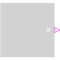
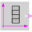
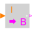
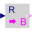
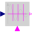

partialBooleanSOPartial block with 1 output Boolean signal |

|
Information
This information is part of the Modelica Standard Library maintained by the Modelica Association.
Block has one continuous Boolean output signal with a 3D icon (e.g., used in Blocks.Logical library).
Connectors (1)
| y |
Type: BooleanOutput Description: Connector of Boolean output signal |
|---|
Extended by (4)
|  |
Modelica.Blocks.Sources Generate a Boolean output signal based on a vector of time instants |
|  |
Modelica.Blocks.Math Convert Integer to Boolean signal |
|  |
Modelica.Blocks.Math Convert Real to Boolean signal |
|  |
Modelica.Blocks.Logical Trigger zero crossing of input u |